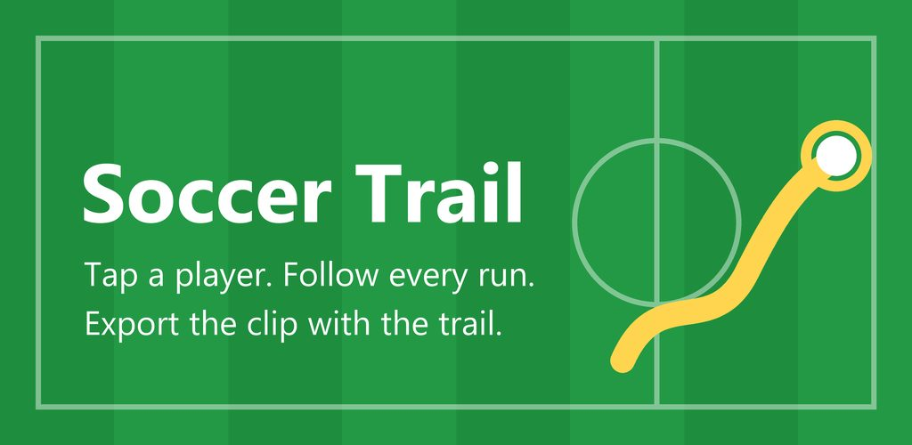
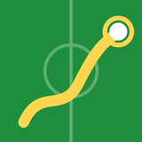

Soccer TrailMatch video player tracking球员轨迹Soccer Trail
Tap a player in a match video, follow every run, and export the clip with their running trail drawn on it. 在比赛视频里点一下球员，跟踪他的每一次跑动，导出带跑动轨迹的视频。
Features, install and how to use →功能、安装和使用方法 →
Chess KingXiangqi & Chess棋王中国象棋与国际象棋
Snap a photo of any board and get engine analysis, or play the computer — Xiangqi (Pikafish) and chess (Stockfish), all offline on your phone. 拍照识别棋局，引擎分析，人机对弈；中国象棋（皮卡鱼引擎）和国际象棋（Stockfish）都支持，不联网也能用。
Features, install and how to use →功能、安装和使用方法 →